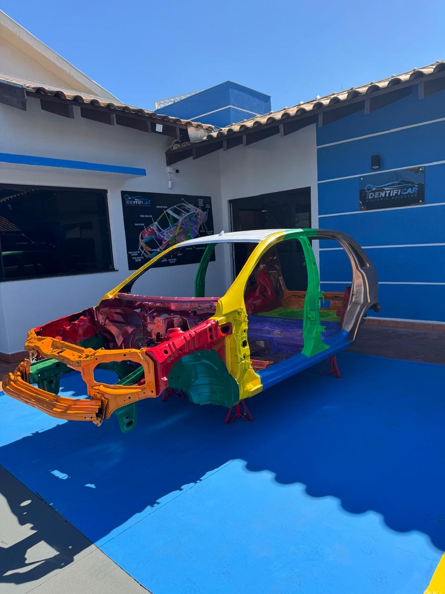
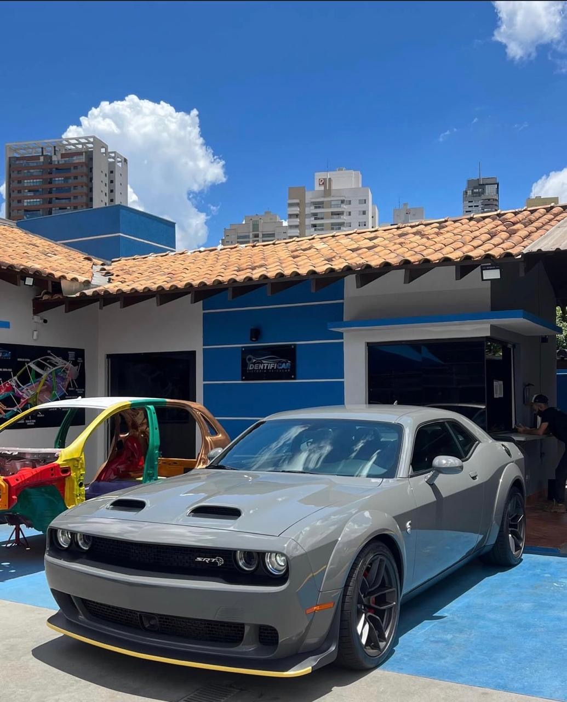
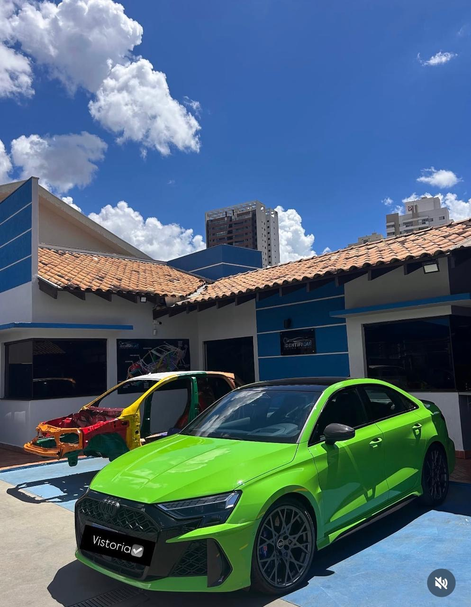
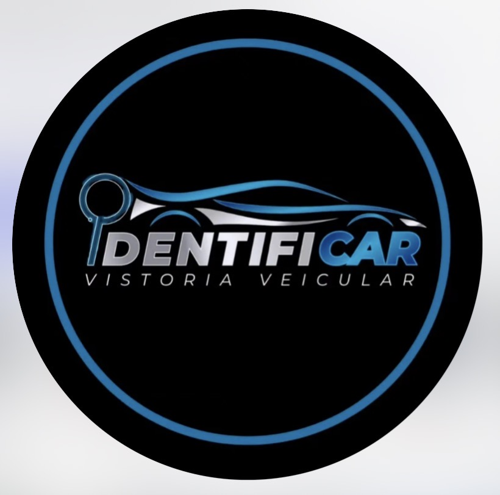

Nossa Estrutura
Conheça a IdentifiCar e veja um pouco da nossa estrutura e dos veículos analisados.




QUALIDADE NÃO SE VENDE, SE CONSTRÓI
Vistoria cautelar completa com transparência, tecnologia e profissionais especializados.
Análise completa da estrutura do veículo, identificando reparos, colisões e adulterações.
Mais segurança para quem compra ou vende um veículo seminovo ou usado.
Laudo detalhado com informações técnicas e inspeção profissional.
Evite prejuízos adquirindo um veículo com histórico transparente.
A IdentifiCar é especializada em vistoria cautelar e inspeção veicular, oferecendo segurança e transparência para quem compra ou vende um veículo.
Nossa equipe utiliza equipamentos modernos e uma análise completa da estrutura do automóvel para identificar possíveis reparos, avarias e histórico de colisões.
Conheça nosso trabalho
Conheça a IdentifiCar e veja um pouco da nossa estrutura e dos veículos analisados.


